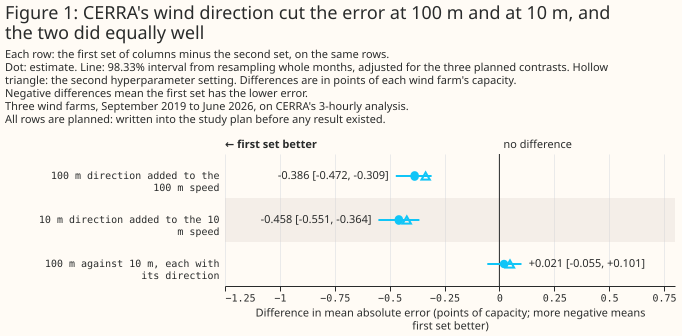
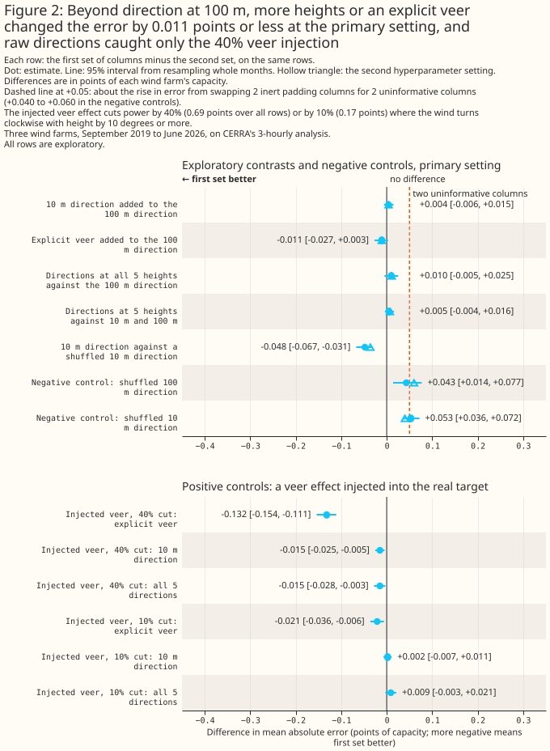
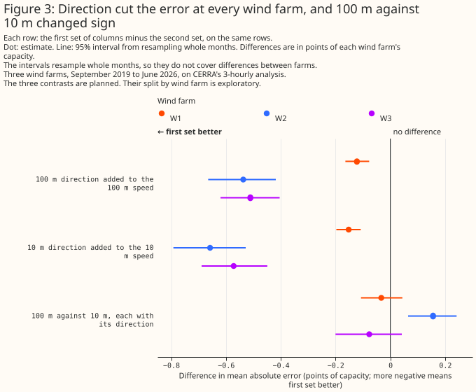

At three wind farms, adding CERRA's wind direction to its wind speed cut the error by about 5%
Summary
At three wind farms in Lincolnshire, adding the Copernicus regional reanalysis for Europe's (CERRA's) wind direction to CERRA's wind speed cut the error of an XGBoost model's estimate of power by 0.386 points of capacity at 100 m and by 0.458 points at 10 m, about 5% of the speed-only error. Both differences are planned comparisons, statistically significant at the 5% level after adjusting for the three planned comparisons, and keep their sign and size at a second XGBoost setting. The study fits one XGBoost model per wind farm to predict the farm's hourly power from CERRA's 3-hourly analysis. Each error is a percentage of the farm's capacity (its 99th percentile of metered output), each difference is in percentage points of capacity, written "points", and each bracketed pair is a 95% interval unless the text says otherwise. The rows are 53,107 farm-hours between 17 September 2019 and 30 June 2026, where a farm-hour is one wind farm's power in one hour. With direction given at both heights, the 100 m and 10 m columns did equally well: the planned difference is +0.021 points, with a 98.33% interval of [-0.055, +0.101]. CERRA is a reanalysis, so every number describes how well CERRA's wind explains power that has already been generated, and none describes forecast skill.
Against direction at 100 m alone, direction at all five heights excluded a gain larger than about 0.005 points at the 95% level (exploratory, primary setting; the second setting's +0.011 [+0.003, +0.020] excludes any gain), and the study could detect a veer effect only when the effect was large. Direction at all five CERRA heights, against direction at 100 m alone, differs by +0.010 points [-0.005, +0.025], so a gain larger than about 0.005 points is excluded at the 95% level. The check that a veer effect would show up is weak. Of a veer effect injected into the real power to cut it by 0.690 points over all rows, two raw directions recovered 0.015 points, and of an injected effect of 0.172 points they recovered none. A veer effect of that smaller size, or of another form, is therefore not ruled out. Swapping 2 inert padding columns for 2 uninformative columns raised the error by 0.040 to 0.060 points in the negative controls, so part of what a set of extra real columns adds can be cancelled by the cost of fitting them.

Three scoped recommendations follow from the evidence below.
- To describe past wind at these three farms from CERRA, give the XGBoost model the wind direction as well as the wind speed. The gain is about 5% of the speed-only error, at 100 m and at 10 m, with a smaller gain at one farm than at the other two (exploratory).
- Do not read the page as showing that direction at several heights, or an explicit veer, adds nothing. The page bounds an added gain from direction at all five heights at about 0.005 points at the 95% level for this study's XGBoost models, and the study's check of its own sensitivity to veer was weak.
- Do not read the page as a statement about forecasting or about wakes. CERRA is an analysis of the past, and no column set holds a turbine layout, hub height or land-cover column.
How this page was made. The research question came from a human. Everything else — the code behind every result, the analysis, the figures, and the text — was written by Claude, Anthropic's AI model. This page and its study scripts were written by Claude Sonnet 5.5, reusing shared study code written by Claude Opus 5.5, Claude Sonnet 5, and Claude Sonnet 5.5. Two independent reviews by Claude Opus checked the method and the results adversarially.
Key findings
- Direction added to 100 m speed changes the error by -0.386 points, and direction added to 10 m speed by -0.458 points, both planned comparisons. See Direction lowers the error at both heights.
- The 100 m and 10 m heights do equally well when each has its direction, a null result with a difference of up to 0.101 points not ruled out. See With direction, 100 m and 10 m do equally well.
- Direction at several heights gains no more than about 0.005 points over direction at 100 m, at the 95% level, an exploratory result. See Direction at several heights adds no more than a small gain.
- The study's check that it could see a veer effect passed only for large effects. See The controls.
- The gain from direction has the same sign at every wind farm and in every full calendar year, and its size differs between farms, an exploratory result. See The gain from direction is smaller at one farm.
Introduction
The question is whether an XGBoost model given CERRA's wind direction describes a wind farm's past power better than one given CERRA's wind speed alone, and whether direction at several heights adds lowers the error beyond direction at one height. CERRA is the Copernicus regional reanalysis for Europe, produced by a consortium led by the Swedish Meteorological and Hydrological Institute for the Copernicus Climate Change Service. A reanalysis re-runs a weather model over past years with the observations of each period, so every value is an analysis of a past hour and no value is a forecast. CERRA is one estimate of past weather, and the results describe that estimate only. The previous study of CERRA's wind heights gave an XGBoost model CERRA's wind speed at one to five heights and no direction. That study could therefore not say what direction adds, and its errors are not comparable in level with the errors on the wind page, whose XGBoost models carry direction as a sine and a cosine.
Several mechanisms could make direction matter for a wind farm's power, and the study does not separate them. Turbines in a farm could shade each other differently in different wind directions, the land around a farm could change the wind's speed and turbulence with direction, and the wind turns with height, called veer when the wind turns clockwise as height increases. A decision about which CERRA columns to ingest for past weather can cite the result.
| Property | CERRA's wind direction |
|---|---|
| Heights | 10, 50, 75, 100, and 150 m |
| Quantity | Direction the wind blows from, in degrees clockwise from north |
| Time step | Every 3 hours (00, 03, ..., 21 UTC), an analysis |
| Grid | 5,500 m, read at each farm's nearest cell |
| History used | 1 September 2019 to 30 June 2026 |
| Source of the 10 m direction | reanalysis-cerra-single-levels, a surface diagnostic |
| Source of the other four directions | reanalysis-cerra-height-levels, values interpolated to fixed heights above ground |
Data and methods
The rows, the folds, the intervals, and the two XGBoost settings are those of the previous
study, so the speed-only column sets reproduce its errors
exactly. There are 53,107 farm-hours between 17 September 2019 and 30 June 2026, and each of the
three farms has at least 15,950 of them. A farm-hour's power is the mean of the half-hourly
readings in the hour centred on the CERRA time, and any hour holding a half-hour of exactly zero is
dropped, from the target alone, so that every column set is scored on the same rows. The wind farms
appear only as W1 to W3. Each farm reads CERRA at its nearest grid cell. Each farm's capacity is the
effective_capacity_mw column of the roster table used by the previous study. Each XGBoost model
is trained on some blocks of whole months and scored on the others, in 5 folds per farm. The 2,000
resamples of whole calendar months, each with one of three fitting seeds, give the 95% intervals.
Every fit ran on the CPU, with no column subsampling and no early stopping, and the study made
1,530 XGBoost fits in all. The primary setting is max_depth 6, and the second setting is a
shallower, more heavily regularised one.
A direction enters an XGBoost model as its sine and its cosine, two columns, and every column set
within a family has the same number of feature columns. The sine and cosine make 359 degrees and 1
degree close together, which the raw angle does not. Every column set carries hour_of_day and
day_of_year. The core family has 7 feature columns, of which 5 are wind columns. The veer family
has 14 feature columns, of which 12 are wind columns, and holds the 10 m and 100 m speeds in every
column set. A column set with fewer real wind columns is padded with monotone transforms of a speed,
such as its square and its square root, which a tree cannot split on in a way the speed itself does
not allow. A comparison never crosses families, so the width never decides a comparison. The wind
columns of each column set are:
| Family | Column set | Real wind columns | Padding |
|---|---|---|---|
| core | speed_10m |
10 m speed | 4 transforms of 10 m speed |
| core | speed_100m |
100 m speed | 4 transforms of 100 m speed |
| core | speed_10m_dir |
10 m speed, sine and cosine of 10 m direction | 2 transforms of 10 m speed |
| core | speed_100m_dir |
100 m speed, sine and cosine of 100 m direction | 2 transforms of 100 m speed |
| core | speed_100m_dir_noise (negative control) |
100 m speed, sine and cosine of another month's 100 m direction | 2 transforms of 100 m speed |
| veer | veer_speed_10_100 |
10 m and 100 m speeds | 10 transforms of 100 m speed |
| veer | veer_dir_100 |
speeds, sine and cosine at 100 m | 8 |
| veer | veer_dir_10_100 |
speeds, sine and cosine at 10 m and 100 m | 6 |
| veer | veer_angle_10_100 |
speeds, sine and cosine at 100 m, and of the veer from 10 m to 100 m | 6 |
| veer | veer_dir_all5 |
speeds, sine and cosine at 10, 50, 75, 100, and 150 m | 0 |
| veer | veer_dir_100_noise (negative control) |
speeds, sine and cosine at 100 m, and of another month's 10 m direction | 6 |
The veer from 10 m to 100 m is the 100 m direction minus the 10 m direction, wrapped to the range
-180 to 180 degrees, and is positive when the wind turns clockwise with height. The columns
veer_dir_10_100 and veer_angle_10_100 hold the same information in two forms. A tree can build a
veer from two raw directions only with many splits, so the difference between them says whether an
explicit veer helps the XGBoost model.
"Planned" and "exploratory" have one meaning each on this page. A comparison is planned when it was written into the study plan before any fit, and every other comparison is exploratory. Each difference is the error of the first column set minus the error of the second, so a negative difference means the first column set has the lower error. The three planned comparisons are:
speed_100m_dirminusspeed_100m: what direction adds at 100 m;speed_10m_dirminusspeed_10m: what direction adds at 10 m;speed_100m_dirminusspeed_10m_dir: 100 m against 10 m, each with its direction.
Each planned comparison was also fitted at the second setting. The veer comparisons, the splits by
wind farm and by year, and the controls are exploratory. The plan is in the repository's git history
(the file plans/study-994-cerra-wind-direction.md on the study branch).
The test covers the month-to-month weather and the fitting seed, and not differences between wind farms. A difference is called statistically significant at the 5% level when its 95% interval lies wholly on one side of zero. The three farms share their weather, so the intervals describe these three farms. The page corrects for multiple comparisons in one place: each planned comparison also has a 98.33% interval, a Bonferroni correction for the three planned comparisons, and counts as a finding only if that interval lies wholly on one side of zero and the second setting agrees. The page has 43 exploratory rows, 16 contrasts and 27 splits, and 4 negative-control rows. An exploratory row with no real effect behind it has a nominal 5% chance of reaching statistical significance at the 5% level, so about 2 such rows would be expected if no row had a real effect. The true number of spurious rows is unknown, because the number of rows with no real effect is unknown. The rows share their months and the farms share their weather, so spurious results cluster. No exploratory row is corrected, and none is stated as a finding.
Two kinds of control check the setup. A negative control replaces real columns with the same
columns taken from another month of the same farm, so that they look like wind and say nothing about
the hour. The negative controls are speed_100m_dir_noise, in place of two inert padding columns,
and veer_dir_100_noise, in place of two more. A positive control is a target with an effect
injected on purpose, so the effect must exist. Each injected target is the real power times one
minus a loss, applied on the rows a rule selects and unchanged elsewhere, so every real feature of
the target stays. The sector rule selects hours when the 100 m direction is within 30 degrees of 255
degrees, 26.3% of rows, and cuts power by 40% (a mean effect of 3.275 points over all rows) or by
10% (0.819 points). The veer rule selects hours when the veer is 10 degrees or more clockwise, 18.2%
of rows, and cuts power by 40% (0.690 points) or by 10% (0.172 points). The full run stopped unless
three gates passed on the 40% targets: direction beat speed alone on the sector target, and both
veer_angle_10_100 and veer_dir_10_100 beat veer_dir_100 on the veer target.
The direction files had no missing values, and no full calendar year differed from the others. Direction files for all five heights were checked for missing values and for keys unmatched to the speed files, and the 100 m circular mean direction is 227 degrees, south-westerly, as the UK's prevailing wind is. A calendar-year table of the 100 m circular mean and the veer found no full year differing from the others by more than 30 degrees in circular mean or 10 degrees in the 95th percentile of veer. The study did not search the record for a step, and the CERRA documentation does not give the dates where production streams join, so a join is not ruled out.
Results
Direction lowers the error at both heights
Direction added to the 100 m speed changes the error by -0.386 points [-0.457, -0.320], and direction added to the 10 m speed by -0.458 points [-0.532, -0.382], both planned. The 98.33% intervals are [-0.472, -0.309] and [-0.551, -0.364], so both comparisons are statistically significant at the 5% level after adjustment, and both have the same sign in all 5 folds. At the second setting the differences are -0.336 points and -0.422 points, with 98.33% intervals of [-0.405, -0.267] and [-0.508, -0.336], so the verdict holds at both settings. Figure 1 shows the three planned comparisons. Each error is in the table below.
| Column set | Error (points of capacity) | 95% interval |
|---|---|---|
speed_10m |
8.424 | [8.078, 8.752] |
speed_100m |
8.373 | [8.044, 8.699] |
speed_10m_dir |
7.966 | [7.591, 8.321] |
speed_100m_dir |
7.987 | [7.623, 8.346] |
speed_100m_dir_noise |
8.416 | [8.080, 8.743] |
veer_speed_10_100 |
8.054 | [7.718, 8.376] |
veer_dir_100 |
7.712 | [7.350, 8.054] |
veer_dir_10_100 |
7.716 | [7.357, 8.057] |
veer_angle_10_100 |
7.701 | [7.335, 8.042] |
veer_dir_all5 |
7.721 | [7.364, 8.061] |
veer_dir_100_noise |
7.765 | [7.399, 8.106] |
The intervals of the errors overlap, and only the paired differences are evidence. The overlap comes from the months of weather that all column sets share. A comparison of two column sets on the same months removes that shared swing, so a difference can be statistically significant when the two errors' intervals overlap.
A control supports the reading that the gain is from the direction's information. The 100 m
direction taken from another month, in place of the real direction, gives an error of 8.416 points
[8.080, 8.743], which is 0.043 points [+0.014, +0.077] above speed_100m, and the real direction
differs from the shuffled direction by -0.429 points [-0.495, -0.366] (exploratory). In the veer
family, direction at 100 m differs from no direction by -0.342 points [-0.399, -0.286] and direction
at 10 m and 100 m by -0.338 points [-0.397, -0.283], both exploratory, with both speeds held in
every column set. No figure draws these three rows, and their numbers are in the study's saved
report.md.
With direction, 100 m and 10 m do equally well
The planned comparison of speed_100m_dir against speed_10m_dir gives +0.021 points [-0.042,
+0.086], which is not statistically significant at the 5% level, and its 98.33% interval is [-0.055,
+0.101]. The interval does not rule out an XGBoost model given the 100 m speed and direction
having an error up to 0.055 points lower than one given the 10 m speed and direction, and does not
rule out an error up to 0.101 points higher. At the second setting the difference is +0.048 points,
with a 98.33% interval of [-0.026, +0.125]. Three of the five folds have the positive sign at the
primary setting.
The 10 m and 100 m columns come from two CERRA products, so the comparison mixes a surface diagnostic with a value interpolated to a fixed height as well as two heights. CERRA assimilates surface observations, which may constrain the 10 m direction better than the 100 m direction. A tie could therefore hide a 10 m advantage that CERRA's design explains and not the wind.
Direction at several heights adds no more than a small gain
Direction at all five heights, against direction at 100 m alone, gives +0.010 points [-0.005,
+0.025], an exploratory result, so a gain larger than about 0.005 points is excluded at the 95%
level. The lower bound of the interval is the bound that limits a gain, because a negative
difference is a gain. The five-height column set swaps 8 padding columns for real direction columns
and has an error of 7.721 points, against 7.712 for veer_dir_100. At the second setting the
difference is +0.011 points [+0.003, +0.020]. Direction at 10 m and 100 m against direction at 100
m gives +0.004 points [-0.006, +0.015], and direction at all five heights against 10 m and 100 m
gives +0.005 points [-0.004, +0.016]. An explicit veer added to the 100 m direction gives -0.011
points [-0.027, +0.003], and -0.011 points [-0.020, -0.002] at the second setting.
Three rows are statistically significant at the second setting only, and none is a finding. The
three rows are the explicit veer against veer_dir_100, -0.011 points; the five-height column set
against veer_dir_100, +0.011 points; and the five-height column set against veer_dir_10_100,
+0.007 points. Each lies near the 5% line at the primary setting, and each is smaller than the 0.040
points that two uninformative columns cost. The five-height rows are positive, which means the
column set with more direction columns had the higher error.
The result bounds a gain and does not show that veer is absent. The bound applies to this study's XGBoost models, to CERRA's direction, and to a veer effect that two raw directions, or the other column sets, could use. The next section says how large a veer effect the study could see.

The controls
All three gates passed on the 40% injected targets, but the gate on direction at one height is
uninformative and the veer instrument is weak. On the sector target, speed_100m_dir against
speed_100m differs by -1.730 points [-2.009, -1.455]. The real target already gives -0.386 points
for the same comparison, so much of the gate's difference is not a response to the injection. On the
veer target, veer_angle_10_100 against veer_dir_100 differs by -0.132 points [-0.154, -0.111],
and veer_dir_10_100 against veer_dir_100 by -0.015 points [-0.025, -0.005], from an injected
effect of 0.690 points over all rows. Two raw directions therefore recovered a small part of the
injected effect, and the explicit veer recovered more of it.
At the 10% injection the two raw directions recovered nothing. The injected effect is 0.172
points over all rows. veer_dir_10_100 against veer_dir_100 gives +0.002 points [-0.007, +0.011],
and veer_dir_all5 against veer_dir_100 gives +0.009 points [-0.003, +0.021]. The explicit veer
gave -0.021 points [-0.036, -0.006]. A null on the real target for the raw-direction column sets
therefore rules out only a veer effect of about the size and form of the 40% injection, and a veer
effect of 0.172 points is not excluded.
Two uninformative columns raised the error by 0.040 to 0.060 points. The four
negative-control rows are +0.043 points [+0.014, +0.077] and +0.060 points [+0.036, +0.092] for
speed_100m_dir_noise against speed_100m, at the two settings, and +0.053 points [+0.036, +0.072]
and +0.040 points [+0.028, +0.053] for veer_dir_100_noise against veer_dir_100. Every one is
statistically significant at the 5% level, and every one is worse. Every difference among the
direction column sets of the veer family is smaller than that cost. The 0.005-point bound is on the
net error. The five-height column set swaps 8 padding columns for real direction columns, and the
study did not measure what fitting 8 extra columns costs. Information worth more than 0.005 points
could therefore be cancelled by that cost. As a sign that the cost is real, veer_dir_10_100 beats
veer_dir_100_noise by 0.048 points while sitting 0.004 points above veer_dir_100, and
veer_angle_10_100 has an error of 7.701 points against 7.765 for veer_dir_100_noise. The row
veer_dir_10_100 minus veer_dir_100_noise, -0.048 points [-0.067, -0.031], measures the 10 m
direction against that cost of unusable columns and is not a gain over veer_dir_100.
The gain from direction is smaller at one farm
The planned comparisons have a negative sign at every wind farm for direction at either height, and the gain at W1 is about a quarter of the gain at W2 and W3 (exploratory). Direction added to the 100 m speed changes the error by -0.122 points [-0.164, -0.077] at W1, -0.537 points [-0.665, -0.418] at W2, and -0.511 points [-0.620, -0.404] at W3. Direction added to the 10 m speed changes it by -0.152 points [-0.197, -0.108], -0.658 points [-0.792, -0.528], and -0.572 points [-0.689, -0.449]. No single farm therefore dominates the pooled result. The comparison is also negative in every full calendar year from 2020 to 2025, with one or two folds per year. In 2023 one of the two folds had the opposite sign for direction at 100 m. A year with only one or two folds gives an interval from fewer weather episodes, so the years are not independent checks.
The comparison of 100 m with 10 m changes sign by farm and by year, which is noise and not a finding. At W2 it is +0.156 points [+0.065, +0.242], at W1 -0.033 points [-0.107, +0.044], and at W3 -0.077 points [-0.200, +0.042]. Among the years it is statistically significant in 2023 (+0.115 points) and 2024 (-0.166 points) with opposite signs.

Discussion: what to use
To describe past wind at these three farms from CERRA, an XGBoost model should be given the direction as well as the speed. The planned gain is about 5% of the speed-only error at either height, and the study did not test a height other than 10 m and 100 m for the planned comparisons. What would change the recommendation is a result at a farm whose direction CERRA represents poorly.
The 100 m or the 10 m columns can be read, and the study does not say which is better with direction. The planned difference is +0.021 points with a 98.33% interval of [-0.055, +0.101]. A choice between the two heights can rest on other grounds, such as which CERRA product a pipeline already reads.
The five-height and 10 m-and-100 m rows give no reason to read direction at a second height, and the study cannot rule out a small veer effect. The five-height bound of about 0.005 points applies to the XGBoost models and columns tested. A study that wants to find a veer effect smaller than the 0.172-point injection, or a veer effect in another form, needs a more sensitive instrument first.
The page recommends nothing about forecasting or about wakes. CERRA is an analysis of past hours, so a result about how well it explains past power does not carry to a forecast at any lead, and a gain from direction is not by itself a wake or a terrain effect.
Limitations
The results describe three wind farms in Lincolnshire, and the intervals describe those farms only. The farms share their weather, so the intervals resample months and seeds, not farms.
- The veer instrument is weak. Two raw directions recovered 0.015 points of a 0.690-point injected effect and nothing of a 0.172-point one, so a null veer result is a statement about large effects only.
- Two uninformative columns cost 0.040 to 0.060 points. A comparison that swaps padding for real columns measures the information net of that cost.
- The 10 m and 100 m columns mix height and product. The 10 m direction comes from a surface diagnostic and the other four directions from another CERRA product. CERRA assimilates surface observations, which may constrain the 10 m direction better than the 100 m direction.
- The year splits have one or two folds each, and the first and last calendar years of the record are partial and are left out.
- 43 exploratory rows and 4 negative-control rows are uncorrected for multiple comparisons. About 2 false positives are expected at the 5% level if no row has a real effect, and they cluster.
- The record may contain a join of production streams. The documentation does not give the dates, and the study compared calendar years instead of searching for a step.
- The 3-hourly rows hold 8 values of
hour_of_day, so the XGBoost models see fewer rows than an hourly study would give them. - Each farm's capacity is one value from the roster table used by the previous study, computed over the farm's whole history, including the months a fold holds out.
- The fits ran on the CPU. Another device would give slightly different numbers.
Scope
The page says nothing about forecast skill, wakes, other reanalyses, other regions, or heights other than the five CERRA serves.
- Forecasting is not covered. CERRA is a reanalysis.
- Wakes and terrain are not covered. No column set holds a turbine layout, hub height or land-cover column.
- Other weather products are not covered. The wind page compares products.
- Offshore wind and other regions are not covered.
- Speed at five heights with direction is not covered. The veer family holds the 10 m and 100 m speeds only.
Data and code availability
Every input except the wind farms' metered output, coordinates, and capacity table is public, and
the code is in the repository at the commit that merged this page. The code is in
studies/beam_diffuse_split/ (cerra_wind_direction.py and cerra_wind_direction_figures.py) and
in packages/studies/ (wind_direction.py). The fits used XGBoost 3.4.1 on the CPU, at the
settings of the previous study.
- Public inputs: CERRA's wind direction from the Copernicus Climate Data Store, at 10 m from
reanalysis-cerra-single-levelsand at 50, 75, 100, and 150 m fromreanalysis-cerra-height-levels, and CERRA's wind speed from the same two datasets. - Private inputs: the three farms' metered output and coordinates, and the capacity table. The farms appear only as W1 to W3.
- Planned comparisons: recorded in the study plan, in the repository's git history.
Reproducing the figures
uv run python studies/beam_diffuse_split/cerra_wind_direction.py
uv run python studies/beam_diffuse_split/cerra_wind_direction_figures.py
npx svgo@4 --multipass --precision=1 --final-newline docs/studies/assets/cerra_wind_direction_*.svg